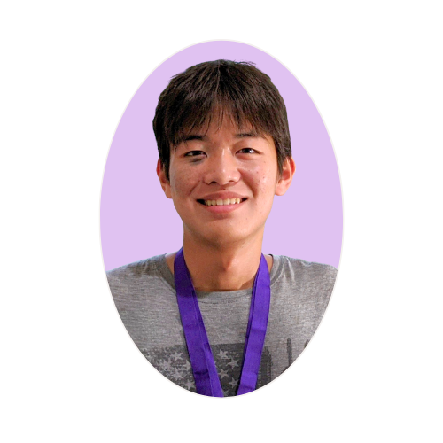
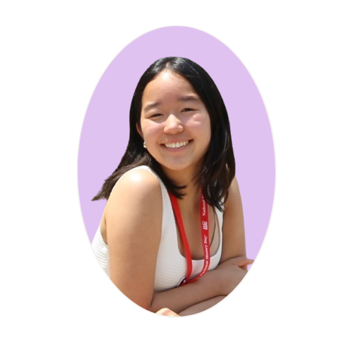
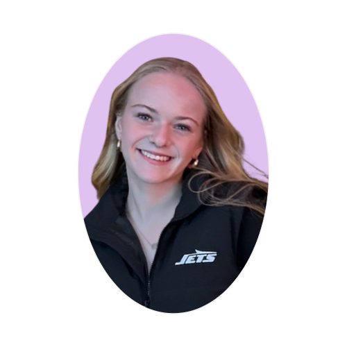

Sean Aono is a cofounder at BridgED, dedicated to spreading awareness about disabilities within his community. He was motivated by the disconnection he felt between disabled students and their peers, often caused by misunderstanding and lack of exposure. He felt responsible to make a difference. Recognizing how easily students with disabilities can feel overlooked or excluded in school environments, Sean felt driven to create a space where empathy, respect, and understanding are actively taught and encouraged. Together with Kathryn, they have developed an organization that empowers students to reshape how young people perceive the disabled community.


Kathryn Shin co-founded BridgED with Sean Aono. Having received learning accommodations herself and witnessing the experiences of family members and friends with disabilities, she was deeply motivated to raise awareness about disabilities and the laws that protect individuals with them. Previously, Kathryn earned first place at the National History Day Competition for her in-depth research on the Americans with Disabilities Act, which she later had the honor of presenting at the Smithsonian National Museum of American History in Washington, D.C. Passionate about fostering understanding, she aimed to educate both students and educators about disabilities, striving to help society move toward greater inclusivity.
Maura Cahill is a cofounder at BridgED, dedicated to spreading awareness about disabilities within her community. She is a freshman at Ridgewood High School and was motivated by the disconnection she felt between disabled students and their peers.
